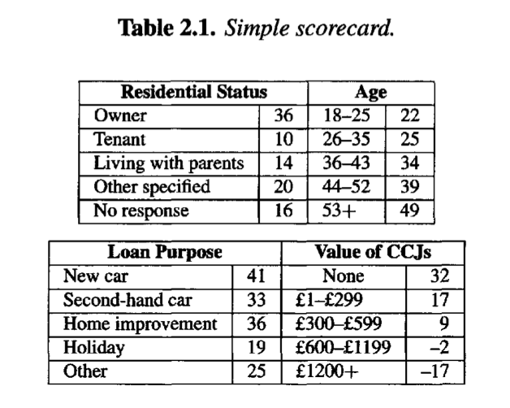
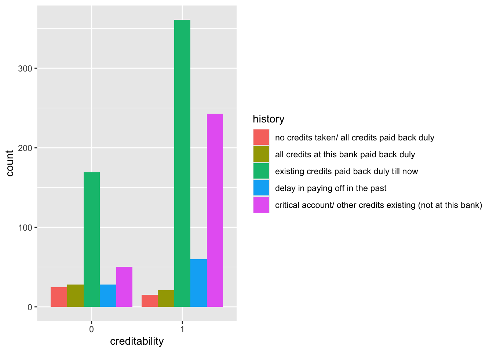
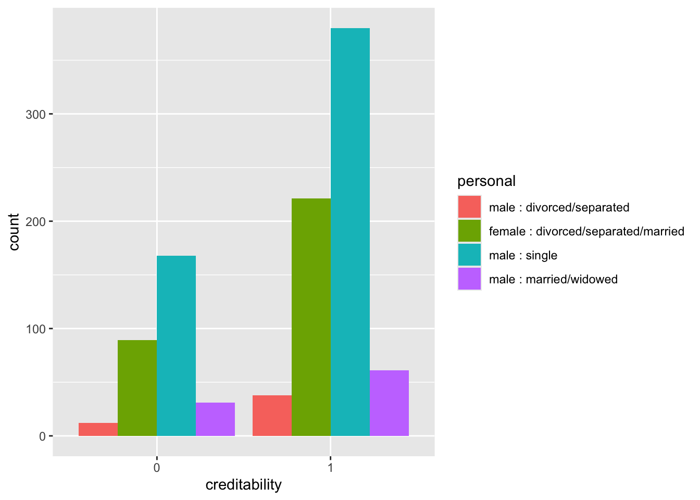
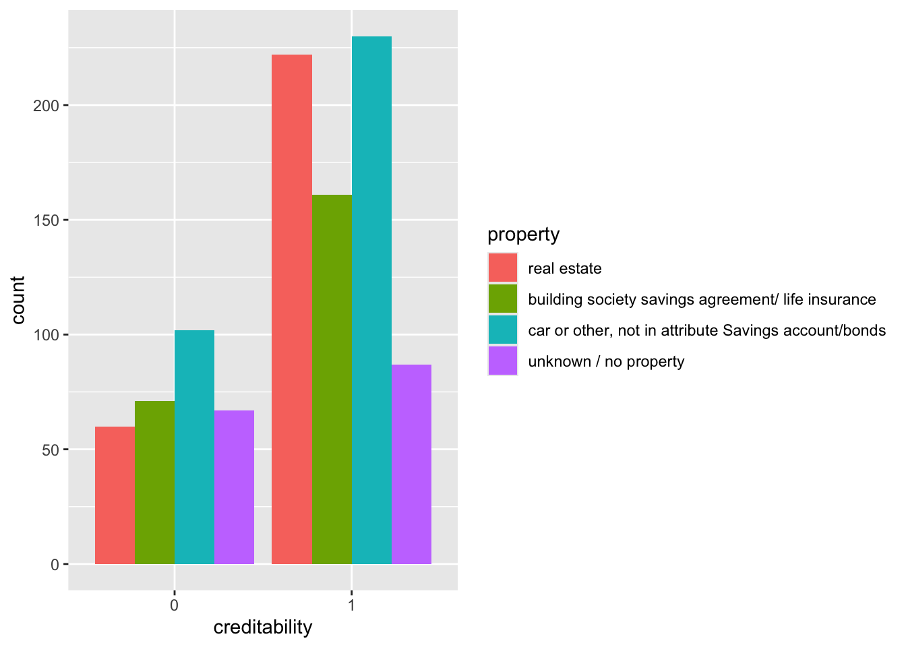

We follow here the terminology of Hastie, Tibshirani, and Friedman (2009). The problem: we are given a data set where some variables, denoted as inputs1, have some influence on one or more output(s)2.
We will denote inputs by the symbol \(X\) having values in \(\mathrm{X}\) (to explicit things we will consider \(\mathrm X\) is \(\mathbb R^p\)). If \(X\) is a vector, its components can be accessed by subscripts \(X_j\), \(j = 1, . . . , p\).
Outputs will be denoted by \(Y\) having value in \(\mathrm Y\):
1.1.2 Supervised learning framework
When \(\mathrm Y\) is \(\mathbb R\), it is a regression problem;
When \(\mathrm Y\) is a discrete set, it is a classification problem (for example \(\mathrm Y\) is \(\{0,1\}\) for binary classification).
In this course we will restrict to the case of binary classification.
We need data to construct predictions or classifications. We suppose we have available a set of observed data:
\((x_i, y_i) \in \mathrm X \times \mathrm Y\) , \(i = 1, \cdots ,n\), known as the learning or training set, with which to construct our prediction.
We assume \((x_i, y_i) \in \mathrm X \times \mathrm Y\) are generated i.i.d. from:
\[
\mathbf P_{\mathrm X \times \mathrm Y}
\]
where we denote \(\mathbf P_{\mathrm X \times \mathrm Y}\), the data generating distribution (or underlying probability distribution or joint law) which is unknown.
The main goal of supervised learning will be to predict unobserved outputs \(y\) given unobserved inputs \(x\) using the learning set.
Such new or unobserved data is referred as the testing set.
1.1.3 Loss and Risk
To achieve that goal we try to find a “best” or optimal classifier (or prediction function in general):
\[
f: \mathrm X \to \mathrm Y
\]
We first must define some criterion to assess the classifier performance (what is optimal?).
For that purpose we consider a loss function \(\ell: \mathrm Y \times \mathrm Y \to \mathbb R^+\):
We now define the Bayes(ian) classifier\(f^*: \mathrm X \to \mathrm Y\) as a function that achieves the minimal expected risk among all possible functions:
In practice \(\mathbf P_{\mathrm X \times \mathrm Y}\) is unknown. What we have is the learning set. The Bayes classifier minimizes the expected risk but is not a function of the learning set. What to do?
the “probabilistic” approach: we estimate the regression function \(\eta(x)\) and use/plug this estimate “inside” the Bayes classifier (Plugin); within this approach mainly two sub-approaches:
the “discriminative” approach or conditional density modeling: we directly model or make an assumption on \(\eta(X)=\mathbf P_{\mathrm Y | \mathrm X}\) and estimate it; for example we can make the assumption that \(\eta(x)\) is a function of a particular form.
the “generative” approach: we model the conditional distribution \(\mathbf P_{\mathrm X | \mathrm Y}\) and use Bayes formula to get: \(\eta(X)=\frac{\mathbb{P}[X|Y=1)]\mathbb{P}[Y=1)]}{\mathbb{P}[X]}=\frac{\mathbb{P}[X|Y=1)]\mathbb{P}[Y=1)]}{\mathbb{P}[X|Y=1)]\mathbb{P}[Y=1)]+\mathbb{P}[X|Y=1)]\mathbb{P}[Y=1)]}\)
the optimization or “machine learning” approach: finding \(f\) minimizing the empirical risk; optimization algorithm or heuristics are used to estimate \(f\); the 0-1 loss is not convex so usually it is replaced by a convex surrogate loss or upper bound; usually re-sampling methods are used to compute empirical risk (\(f\) is trained on a training set and empirical risk evaluated on the testing set, \(f\) is chosen to minimize empirical risk).
We will see later that in the context of the Logistic Regression the two approaches are strongly linked: it can be seen as a probabilistic|discriminative approach or a optimization approach.
1.2 Illustrative example: the Mixture data set
To illustrate what we have seen we use the Mixture data set described in Hastie, Tibshirani, and Friedman (2009, 12–16).
The data set is generated as follows (p. 16):
First the authors generate 10 “means” \(m_k\) in \(\mathbb R^2\) from a bivariate Gaussian distribution \(\mathcal{N}((1,0),I)\) and label this class BLUE.
Similarly, 10 more are drawn from \(\mathcal{N}((0,1),I)\) and labeled ORANGE.
Then for each class authors generate 100 observations as follows: for each observation, \(m_k\) is picked at random with probability 1/10 and used to generate a \(\mathcal{N}(m_k,I/5)\), thus leading to a mixture of Gaussian clusters for each class. They generate similarly an additional data set of 5k observations per class for testing purposes.
The task is to create a classifier that, based on the coordinates \(x_1\) and \(x_2\), determines whether the point is ORANGE or BLUE.
A popular method to move beyond linearity is to transform variables, for example using splines (Hastie, Tibshirani, and Friedman 2009, 5.6 Nonparametric Logistic Regression, p161-164).
This can achieve more flexibility at the decision boundary.
Using natural splines in \(x_1\) and \(x_2\):
Code
library(splines)## fit additive natural cubic spline model# Additive Natural Cubic Splines - 4 df each (Fig 5.11 p164)grid <-expand.grid(x1 =seq(-2.6, 4.2, .05), x2 =seq(-2.0, 2.9, .05)) %>%as_tibble()mixture_example_glm_splines_add <-glm(Y ~ splines::ns(x1, df=4) + splines::ns(x2, df=4),data = data_mixture_example,family ="binomial")grid <- broom::augment(mixture_example_glm_splines_add,data = data_mixture_example,newdata = grid,type.predict ="response",type.residuals ="deviance") %>%mutate(predict_gam =1*(.fitted >=0.5),predict_oracle =predict_oracle_V(x1, x2))ggplot(grid) +geom_point(aes(x = x1, y = x2, col =as.factor(predict_gam)),shape =20, size = .05, alpha = .5, show.legend =FALSE) +geom_contour(aes(x = x1, y = x2, z = predict_oracle),breaks =0.05, col ='purple') +geom_contour(aes(x = x1, y = x2, z = predict_gam),breaks =0.05, col ='darkgrey') +geom_point(data = data_mixture_example, aes(x = x1, y = x2, col = Y),shape ="o", size =4, stroke =2, show.legend =FALSE) +scale_colour_manual(values =c("dodgerblue", "orange")) +theme_void()
# Optionnal - plot the graph for logistic regression using binning + "WOE/IV" feature engineering (TODO if shown in class)
1.2.5 K-Nearest Neighbors Algorithm
k-NN is a non-parametric algorithm. Given a new observation, it finds in the training set the k closest points (given a certain distance) and predicts using a majority vote.
We show below the boundary decision for \(k=15\):
Code
library(class)k <-15grid <-expand.grid(x1 =seq(-2.6, 4.2, .05), x2 =seq(-2.0, 2.9, .05)) %>%as_tibble()# Normalize using boundaries of training samplenormalize <-FALSE# TRUE (pred error 0.259) / FALSE (pred error 0.2498)if (normalize) { min1 <-min(data_mixture_example$x1) min2 <-min(data_mixture_example$x2) max1 <-max(data_mixture_example$x1) max2 <-max(data_mixture_example$x2) train_mixture <- data_mixture_example %>%mutate(x1 = (x1 - min1) / (max1 - min1),x2 = (x2 - min2) / (max2 - min2)) %>%select(x1, x2) test_grid_mixture <- grid %>%mutate(x1 = (x1 - min1) / (max1 - min1),x2 = (x2 - min2) / (max2 - min2)) %>%select(x1, x2) test_new_mixture <- new_mixture %>%mutate(x1 = (x1 - min1) / (max1 - min1),x2 = (x2 - min2) / (max2 - min2)) %>%select(x1, x2)} else { train_mixture <- data_mixture_example %>%select(x1,x2) test_grid_mixture <- grid %>%select(x1,x2) test_new_mixture <- new_mixture %>%select(x1,x2)}mixture_example_knn <-knn(train_mixture, #train X test_new_mixture, # test X data_mixture_example %>%pull(Y), # train Y k)table_test <-table(mixture_example_knn, new_mixture %>%# test Ymutate(Y =as_factor(if_else(Y =="BLUE", 0, 1))) %>%pull(Y))mixture_example_knn <-knn(train_mixture, #train X train_mixture, # test X = train X data_mixture_example %>%pull(Y), # train Y k)table_train <-table(mixture_example_knn, data_mixture_example %>%pull(Y))mixture_example_knn <-knn(train_mixture, #train X test_grid_mixture, # test X = "dotted" grid for plot data_mixture_example %>%pull(Y), # train Y k)grid <-bind_cols(grid, predict_knn = mixture_example_knn) %>%mutate(predict_knn =if_else(mixture_example_knn=='0', 0, 1),predict_oracle =predict_oracle_V(x1, x2))ggplot(grid) +geom_point(aes(x = x1, y = x2, col =as.factor(predict_knn)),shape =20, size = .05, alpha = .5, show.legend =FALSE) +geom_contour(aes(x = x1, y = x2, z = predict_oracle),breaks =0.05, col ='purple') +geom_contour(aes(x = x1, y = x2, z = predict_knn),breaks =0.05, col ='darkgrey') +geom_point(data = data_mixture_example, aes(x = x1, y = x2, col = Y),shape ="o", size =4, stroke =2, show.legend =FALSE) +scale_colour_manual(values =c("dodgerblue", "orange")) +theme_void()
To play further and make nicer animated 2D decision boundaries for binary classifiers see these two blogs here and here. Please also note that the scikit-learnPython library implements methods to display decision boundaries for classifiers.
1.3 Scoring
At last we come to the subject of our course!
We remind we are in the context of binary classification.
Often we (and the business) are more interested in estimating the probabilities that \(Y\) belongs to each class.
Quoting Trevor Hastie: “For example, it is more valuable to have an estimate of the probability that an insurance claim is fraudulent, than a classification fraudulent or not.” This applies to many uses cases:
propensity score: is a customer interested by a product or service ? will the user click on the ad?
behavioral score: may a customer encounter a delinquency, a bankruptcy ?
application score: is the bank ready to grant a loan or a credit card to a customer to authorize a given transaction ?
churn score: will a newly acquired customer stay long enough for the account to be profitable ?
fraud score : is an application or a transaction fraudulent?
Scoring has business implications and is used as a decision tool for risk assessment or costs reduction:
improve the rate of return of marketing campaigns : reach more receptive customers without increasing the number of mailings or reach as many receptive customers with smaller mailings
improve efficiency of credit decisions : treat faster customers with low score and concentrate attention on customers with medium score
increase homogeneity of decisions across sales managers, and across applications
reduce the number of overdue
also used for pricing (adapt price to risk)
Before teaching this course I understood “Scoring” as applied classification with business perspective (i.e. Credit scoring for banks).
But we will see that this is more subtle than that, and that there is a precise definition of Scoring.
We follow in the rest of the section the terminology of Cornillon and Matzner-Løber (2019, chap. 11.6 “Prévision - scoring”).
The aim of Scoring is to find a Scoring function or Score \(S: \mathbb R^p \to \mathbb R\) that is “high” in case \(\mathbb{P}[Y=1|X=x)\) is “high” and “low” in case \(\mathbb{P}[Y=0|X=x)\) is “high”.
We say that \(S(x)\) is the score of the observation \(x \in \mathbb R^p\).
We show below a simplified example of a credit scorecard that were typically used by banks to assess the creditworthiness of consumer loans applicants (as shown in (Thomas, Edelman, and Crook 2002)):

In this example a 35-year-old owner wishing to borrow money for home improvement and that has never had a county court judgement (CCJ) will score \(129 = (36+25+36+32)\), while a 20-year-old living with his parents borrowing for holiday and having more than £1200 of CCJ will score \(38=(22+14+19-17)\).
Some remarks:
the notions of Score and classifier are closely linked. Given a Score \(S\) and a cutoff \(s \in \mathbb R\) we obtain the following classifier:
The values taken by \(S(x)\) are less important than the way they will order a set of observation \(x_1,...x_n\). For any \(\phi: \mathbb R \to \mathbb R\) bijective and increasing function, we say that the scores \(S\) and \(\phi \circ S\) are equivalent.
We defined above, in the context of supervised learning, the regression function \(\eta(x)=\mathbb{P}[Y=1|X=x)]\). It is a natural candidate for a Scoring function. The related Bayes classifier uses \(s=\frac{1}{2}\) as cutoff. As we have just seen in the last sections, \(\eta(x)\) is unknown and we will have to approximate or estimate this regression function using the training set.
There are many ways to assess the performance of a Score.
We first define the confusion matrix:
\(f_s(X)=0\)
\(f_s(X)=1\)
\(Y=0\)
TN
FP
N
\(Y=1\)
FN
TP
P
The confusion matrix is a contingency table which cross-tabulates \(Y\) with the predicted one \(f_s(X)\).
It can be evaluated on the learning set as well as on the testing set.
The following vocabulary originates from medical applications:
\(\alpha(s)\) is called false positive rate and \(\beta(s)\)false negative rate. Similarly specificity and sensitivity are defined:
\[
sp(s)=P(S(X) < s|Y=0) = 1 - \alpha(s)
\]
and
\[
se(s)=P(S(X) \geq s|Y=1) = 1 - \beta(s)
\]
The ROC (Receiver Operating Characteristic) curve allows to visualize \(\alpha\) and \(\beta\) on a same graph for all \(s\) allowing to choose the cutoff and compare different Scores.
Precisely, the ROC curve of a Score \(S\) is a parametric curve of the variable \(s\):
\[
\begin{array}{ll}
ROC:&\mathbb R \to [0,1]^2 \cr
& s \to (x(s)=\alpha(s),y(s)=1-\beta(s))\cr
\end{array}
\]
For a given Score \(S\), the ROC curve passes through the points \((0,0)\) and \((1,1)\), which corresponds to classifying all observations as \(0\) (\(s\to \infty\)) or \(1\) (\(s\to -\infty\)).
We now define two special cases:
A Score \(S\) is said to be perfect if \(s^*\) exists such that:
Figure 1: ROC curves of a perfect Score (solid, blue) and a random Score (dashed, orange)
The ROC curves can be summarized to generate numeric criteria such as the AUC (Area Under Curve).
The AUC will be \(1\) for the perfect Score and \(0.5\) for the random Score and can be used to rapidly compare two Scores.
It is considered better than other point-wise criteria.
However we must keep in mind that the AUC as a summary criterion presents some drawbacks since two Scores can have the same AUC but behave very differently in the plane.
In practice we do not know the probabilities \(x(s)\) and \(y(s)\) to define the ROC curve.
As said before, a training set will be used to learn a Score \(S\) and a testing set to estimate the ROC curve \(x(s)\) and \(y(s)\) for a range of \(s\).
In the rest of the course we will be equally interested in binary classification and scoring which are closely linked.
Throughout the course, we will focus on two fundamental and complementary models: the Logistic Regression model and Decision Trees.
Logistic Regression employs a “generative” approach to model with a parametric law the joint probability of input \(X\) and outputs \(Y\) and then estimate the parameters of the regression function.
On the other hand, Decision Trees adopt a “machine learning” approach, aiming to minimize empirical risk. These models serve as the foundation elements for modern machine learning algorithm, making them essential components of the classification/scoring toolkit.
We provide here some intuitions leading to the Logistic Regression model using a simulated data set from James et al. (2021) (the Default data set).
This is a toy data set used for teaching purposes containing information on ten thousand customers.
The aim here is to assess which customers will default on their credit card debt (the target or response variable) based on the current credit card balance and other individual characteristics (the predictors or feature vector).
This is a binary classification problem as the default variable takes value in a discrete set (here binary). In the following we will denote \(Y\) the output or response variable and \(X = (X_0,X_1,\cdots,X_{p-1})^{T}\) the feature vector or inputs.
The approach we follow is similar to (Hosmer, Lemeshow, and Sturdivant 2013) or (Cornillon and Matzner-Løber 2019). Both books use a similar example: the presence or absence of a Coronary Heart Disease (CHD) is explained with the age of an individual (the data set chdage is available in companion package aplore3).
We can start to explore the Default data with a scatterplot (Figure 2) of the target variable (default) with respect to a predictor (balance):
Code
# Default data set (simulated) from ESLII/ISLRdefault_data <- ISLR2::Default %>%as_tibble()ggplot(default_data, aes(x=balance, y=default)) +geom_point(alpha=0.2)
Figure 2: Scatterplot of variable default with respect to credit card balance for 10000 customers
In this scatterplot, all points fall on one of two parallel lines representing the absence (No) or occurrence (Yes) of default. We “jitter” the data vertically to avoid overplotting. The plot below shows that the response variable is imbalanced towards the absence of default:
Figure 3: Variable balance with respect to default status
We can see from Figure 2 and Figure 3 that default tends to be more prevalent for accounts with a high balance. However it is difficult to guess a simple relationship between default and balance.
To investigate further we discretise the balance variables by classes of width \(300\$\) and compute the mean of response variable (default is Yes) within each balance class:
Code
class_width <-300(default_data_binned <- default_data %>%mutate(balance_bins =cut(balance, breaks =seq(0, 3000, class_width),right =FALSE, dig.lab =4),min =floor(balance / class_width) * class_width,max =if_else(balance ==0 , 1, # customers with 0$ balance should be long to [0, width) class# or be excludedceiling(balance / class_width)) * class_width) %>%group_by(balance_bins, min, max, default) %>%summarize(n=n()) %>%ungroup() %>%pivot_wider(names_from = default, values_from = n) %>%replace_na(list(Yes =0, No =0)) %>%mutate(`Mean(default)`=round(Yes / (Yes + No), 4)))
In the following we map, by convention and for better readability, the response variable \(Y \in\{Yes, No\}\) to \(\{0, 1\}\):
\[
Y = \left\{ \begin{array}{ll}
1& \mbox{if customer defaulted on its credit card (ie default=Yes)}\cr
0& \mbox{otherwise}.
\end{array} \right.
\]
Then we plot the mean of default (in red) within each balance class (of width \(300\$\)):
Figure 4: Mean occurrence of default within balance classes
The relationship between the mean occurrence of default and balance is easier to read.
Figure 4 clearly shows that as balance increases, the proportion of customers defaulting on their credit card increases.
We also notice that the mean default occurrence with respect to balance classes follows a kind of “S”-shaped curve or sigmoid function. Note that the shape depends on classes width and might change.
Going further and informally, considering that the mean of default occurrence is an estimate of \(\mathbf{E}[Y|X=x]\) for each balance classes an idea would be to model:
\[
\mathbb{E}[Y|X=x] = \mu_\beta(x)
\]
where \(\mu_\beta\) is a sigmoid function in \([0,1]\).
The Logistic Regression model uses the sigmoid function \(\sigma: x \to\sigma(x)=\frac{e^{x}} { 1 + e^{x} }\) also known as logistic function.
Code
(default_occurrence +geom_smooth(method ="glm", formula = y ~ x,method.args =list(family ="binomial"), se =FALSE,col ="dodgerblue",linetype ="dotted") +geom_segment(data = default_data_binned,aes(x = min, xend = max, y =`Mean(default)`, yend =`Mean(default)`),color ='coral',linewidth=1.25))
Another approach would have been to treat \(Y\) as a quantitative response variable and fit a simple linear model:
Code
linear <-lm(default ~ balance, data = default_data %>%mutate(default =if_else(default =="Yes", 1, 0)))#summary(linear)coeff_lm <- linear$coefficientsalpha <- coeff_lm["(Intercept)"]beta <- coeff_lm["balance"]
Code
(ggplot(default_data %>%mutate(default =if_else(default =="Yes", 1, 0)), aes(x=balance, y=default)) +geom_point(alpha=0.2) +geom_segment(data = default_data_binned,aes(x = min, xend = max, y =`Mean(default)`, yend =`Mean(default)`),color ='coral',size=1.25)+geom_line(data =tibble(x =seq(0,3000, 300)) %>%mutate(y = alpha + beta * x),aes(x = x, y = y),color ='darkolivegreen',linetype ='dotted'))# Alternatively we could have used the geom_smooth command# geom_smooth(method = "lm", # formula = y ~ x,# se = FALSE,# col = "darkolivegreen",# linetype = "dotted")
Figure 5: Fitting a linear model, default is treated as a quantitative response variable
Figure 5 shows that a linear model fails to fit the data. In particular, for low credit card balances the linear model shows a “negative probability of default”. This is quite prominent here as response variable is imbalanced towards the No default category. For the same reasons, the least square method fails to correctly fit the category of interest (less than 0.25 probability).
Usually in such presentation (for example Hosmer, Lemeshow, and Sturdivant (2013)) data is more balanced and a linear model approximately fits the two classes. However in any case a linear model cannot confine the predicted value to \([0, 1]\) for all observations of predictors.
2.2 A more formal definition
We use the concepts we have defined in the first part of this lesson. The problem we are facing trying to predict the output default (\(Y \in \{0,1\}\)) using a training set of inputs or feature vector \(X\) is a binary classification problem.
We remind that to estimate an optimal classifier for output \(Y \in \{0,1\}\) using input \(X = (X_1,\cdots,X_p)\) one approach was to:
for some parameter \(\beta=(\beta_1,\cdots,\beta_p)\in \mathbb R^p\), usually \(x_1=1\) and \(\beta_1\) is an intercept. \(\sigma\) is the sigmoid logistic function we have seen before.
In the literature is usual to denote \(\eta(X)=p_{\beta}(X)\) or \(\eta(X)=\pi_{\beta}(X)\).
From now, we will use the notation \(p_{\beta}(X)\).
Defining \(\mathrm{logit}: x \to \log\bigg( \frac{x}{1-x}\bigg)\) we have:
\[
\mathrm{logit}(p_{\beta}(X))=X^T\beta
\]
The Logistic Regression model:
We are given \((x_i, y_i) \in \mathbb R^p \times \{0,1\}\), \(i=1,\cdots,n\)
The Logistic Regression model assumes that outputs \(y_i\) are independent Bernoulli with parameter \(p_{\beta}(x_i)\) depending on \(x_i\):
\[
\mathrm{logit}(p_{\beta}(x_i))=x_i^T\beta
\]
The Logistic Regression model defined above is a special case of more general family of models, the so-called Generalized Linear Models (GLM).
The family of GLM extends the applicability of linear-model ideas to data where responses are binary (e.g. Logistic Regression) or counts (e.g. Poisson Regression), among further possibilities. The concept emerged with Nelder and Wedderburn and has been studied extensively (see Nelder and Wedderburn (1972) or Cornillon and Matzner-Løber (2019)) .
The syntax to fit the Logistic model in R using glm() is:
The formula \(\mathrm{y} \sim \mathrm{x}\) depicts the model (i.e. inputs are \(X\), output is \(Y\)) and the data= argument points to the training set contained in a R dataframe (or tibble). This is quite similar to the lm() function.
We also need to specify the distribution for the conditional \(Y\) values (binomial) and the link function (logit) via the family= argument.
We are given \((x_i, y_i) \in \mathbb R^p \times \{0,1\}\), \(i=1,\cdots,n\) where outputs \(y_i\) are independent Bernoulli with parameter \(p_{\beta}(x_i)\) depending on \(x_i\):
\[
\mathrm{logit}(p_{\beta}(x_i))=x_i^T\beta
\]
The parameters \(\beta\) of the Logistic Regression model are usually determined using Maximum Likelihood Estimation (MLE). It consists on finding \(\beta\) for which the joint probability of the observed data is greatest.
As \(y_i\) are independent, the likelihood function (joint probability) is the product of the probability mass functions:
\[
L(Y,\beta) = \prod_{i=1}^n p_{\beta}(x_i)^{y_i}(1-p_{\beta}(x_i))^{1-y_i}
\] with \(Y=(y_1,\cdots,y_n)\) and \(\beta=(\beta_1,\cdots,\beta_p)\).
We seek to maximize the likelihood function over \(\beta\), it is equivalent but easier to maximize the log-likelihood:
\[
S(\hat\beta) \approx S(\beta^{(k)})+H(\beta^{(k)})(\hat\beta-\beta^{(k)})
\] and starting from an initial guess of \(\beta=\beta_0\), the Newton-Raphson update formula is:
We show below a naive implementation of Newton-Raphson method to estimate \(\beta\) (also known as Fisher Scoring algorithm in the context of Logistic Regression)
Code
# We put the data frame in matrix form# also adding an interceptX <-cbind(rep(1, nrow(default_data)),as.matrix(default_data %>%select(balance, income))) colnames(X) <-c("(Intercept)", "balance", "income")n <-nrow(X)# We extract the output as vectorY <- default_data %>%mutate(default =if_else(default=='Yes', 1, 0)) %>%pull(default)# We set an initial guess for beta and criterion for stoppingbeta <-c(0.01, 0.0, 0.0)nb_iter <-25tol <-1e-4lr_solve <-function(X, Y, beta, nb_iter, tol){for(i in1:nb_iter){# first compute p_beta(X) p_beta <-exp(X %*% beta) / (1+exp(X %*% beta))# then the Score Score_beta <-t(X) %*% (Y-p_beta)# and the Hessian W_beta <-matrix(0, n, n)diag(W_beta) <- p_beta*(1-p_beta) Hessian_beta <--t(X) %*% W_beta %*% X# we update beta new_beta <- beta -solve(Hessian_beta) %*% Score_beta# we check for convergenceif(t(beta-new_beta) %*% (beta-new_beta) < tol){return(list(beta = beta, hessian = Hessian_beta, nb_iter = i)) } beta <- new_beta }return(list(beta = beta, hessian = Hessian_beta, nb_iter = i)) }sol <-lr_solve(X, Y, beta, nb_iter, tol)
We verify that R glm() and our algorithm give the same coefficients:
Newton-Raphson:
Code
print(sol$beta)
[,1]
(Intercept) -1.153792e+01
balance 5.645755e-03
income 2.080353e-05
\(\beta^{(k+1)} = (X^TW_{\beta^{(k)}}X)^{-1}X^TW_{\beta^{(k)}}Z_{\beta{(k)}}\) corresponds to the solution of a weighted (\(W_{\beta^{(k)}}\)) linear regression of \(Z_{\beta^{(k)}}\) by \(X\). As an exercise you can implement this algorithm.
Is is a good exercise to sharpen your R skills to implement this algorithm and compare its results with the Newton method.
2.3.2.3 Example where MLE is not finite
To conclude on the numerical aspects, we signal a special and extreme case where the iterative algorithm won’t converge. The theoretical aspect is covered in (Albert and Aanderson 1984).
We simulate a perfectly separated data set. Here \(X\in \mathbb [-1,1]\) and \(Y\in\{0,1\}\):
Code
set.seed(1987)X <-c(runif(n =50, min =-1, max =0),runif(n =50, min =0, max =1))Y <-c(rep(0, 50), rep(1, 50))tbl_separated <-tibble(X,Y)ggplot(tbl_separated) +geom_point(aes(X, Y))
In this setting the iterative algorithm fails to converge and coefficient “saturates” to a high/low value (while it should go to infinite):
The iterative algorithm converges again and the impact on the Scoring function (i.e. \(\mathbb{P}[Y=1|X=x)\)) and the decision rule (shifting left below \(X=O\)) is not negligible for a one point change:
Nonetheless the case we described is very unlikely to happen in a real life setting, and a good data set exploration should avoid such trap. More details can be found in the document Separation and Convergence Issues in Logistic Regression.pdf
2.3.3 Logistic Regression as a machine learning approach
We have another look at the log-likelihood equation stated before, we have:
and $(p_) $ is the empirical risk on the training set.
Estimating \(\beta\) by maximizing the log-likelihood is equivalent to minimizing with respect to \(\beta\) the empirical risk of \(p_\beta\) for the logistic loss. Note that usually in the context of machine learning and logistic loss, the output \(Y\) is relabeled to \(\{-1,1\}\).
2.4 Real life data sets
We introduce below two interesting data sets that can be used to apply the methods seen in the course.
2.4.1 The German Credit data set
This data set mainly composed of categorical features is analysed in depth in Tufféry (2011) and the analysis has been extended in the Chapter 4 of Charpentier (2014) using the R programming language and a statistical learning approach (it is a very good reference covering Logistic Regression, Stepwise variable selection, Penalized Logistic Regression, Decision Trees and Ensemble methods with a mix of theory and practice). Part of the analysis is available in this blog post by A. Charpentier, who also open sourced two excellent courses about Applied Linear Models and Data Science for Actuaries that I recommend you to consult if interested.
The German Credit data set is available at the UCI archive.
vars_quali <-names(germancredit_clean %>%select_if(is.factor) %>%select(-creditability))for(var in vars_quali){ var <-as.name(var)print(ggplot(germancredit_clean %>%group_by(!!var, creditability) %>%summarize(count =n()) %>%ungroup()) +geom_bar(aes(x = creditability, y = count, fill =!!var), position="dodge",stat="identity"))}



Code
germancredit_glm <-glm(creditability ~ . , data = germancredit_clean, family ="binomial")summary(germancredit_glm)
Call:
glm(formula = creditability ~ ., family = "binomial", data = germancredit_clean)
Coefficients:
Estimate
(Intercept) 6.661e-01
status0 <= ... < 200 DM 3.785e-01
status... >= 200 DM / salary assignments for at least 1 year 9.627e-01
statusno checking account 1.793e+00
duration -2.906e-02
historyall credits at this bank paid back duly -1.802e-01
historyexisting credits paid back duly till now 5.129e-01
historydelay in paying off in the past 9.627e-01
historycritical account/ other credits existing (not at this bank) 1.448e+00
purposecar (new) -6.407e-01
purposecar (used) 9.629e-01
purposedomestic appliances -1.912e-01
purposeeducation -7.805e-01
purposefurniture/equipment 7.425e-02
purposeothers 8.465e-01
purposeradio/television 2.004e-01
purposerepairs -5.053e-01
purposeretraining 1.176e+00
amount -1.091e-04
savings100 <= ... < 500 DM 3.498e-01
savings500 <= ... < 1000 DM 3.753e-01
savings... >= 1000 DM 1.385e+00
savingsunknown/ no savings account 9.987e-01
job_since... < 1 year -1.659e-01
job_since1 <= ... < 4 years 1.900e-01
job_since4 <= ... < 7 years 8.492e-01
job_since... >= 7 years 2.575e-01
icr2 -1.586e-01
icr3 -4.868e-01
icr4 -7.572e-01
personalfemale : divorced/separated/married -5.580e-01
personalmale : single -6.019e-01
personalmale : married/widowed -5.000e-01
debtors_guarantorsco-applicant -3.650e-01
debtors_guarantorsguarantor 1.004e+00
resid_since2 -7.091e-01
resid_since3 -4.795e-01
resid_since4 -3.594e-01
propertybuilding society savings agreement/ life insurance -2.536e-01
propertycar or other, not in attribute Savings account/bonds -1.740e-01
propertyunknown / no property -6.688e-01
age 1.208e-02
other_installment_plansstores 1.242e-01
other_installment_plansnone 6.206e-01
housingown 5.599e-01
housingfor free 7.290e-01
existing_credits2 -4.008e-01
existing_credits3 -2.278e-01
existing_credits4 -3.913e-01
jobunskilled - resident -4.207e-01
jobskilled employee / official -4.561e-01
jobmanagement/ self-employed/ highly qualified employee/ officer -3.912e-01
to_provide2 -5.758e-02
telephoneyes, registered under the customers name 2.891e-01
foreign_workerno 1.475e+00
Std. Error
(Intercept) 1.025e+00
status0 <= ... < 200 DM 2.179e-01
status... >= 200 DM / salary assignments for at least 1 year 3.694e-01
statusno checking account 2.348e-01
duration 9.382e-03
historyall credits at this bank paid back duly 5.620e-01
historyexisting credits paid back duly till now 4.415e-01
historydelay in paying off in the past 4.749e-01
historycritical account/ other credits existing (not at this bank) 4.424e-01
purposecar (new) 3.324e-01
purposecar (used) 4.373e-01
purposedomestic appliances 8.114e-01
purposeeducation 4.644e-01
purposefurniture/equipment 3.519e-01
purposeothers 7.900e-01
purposeradio/television 3.345e-01
purposerepairs 6.047e-01
purposeretraining 1.176e+00
amount 4.428e-05
savings100 <= ... < 500 DM 2.906e-01
savings500 <= ... < 1000 DM 4.060e-01
savings... >= 1000 DM 5.413e-01
savingsunknown/ no savings account 2.642e-01
job_since... < 1 year 4.378e-01
job_since1 <= ... < 4 years 4.196e-01
job_since4 <= ... < 7 years 4.597e-01
job_since... >= 7 years 4.213e-01
icr2 3.067e-01
icr3 3.381e-01
icr4 2.986e-01
personalfemale : divorced/separated/married 4.241e-01
personalmale : single 4.114e-01
personalmale : married/widowed 4.811e-01
debtors_guarantorsco-applicant 4.153e-01
debtors_guarantorsguarantor 4.207e-01
resid_since2 2.970e-01
resid_since3 3.357e-01
resid_since4 3.009e-01
propertybuilding society savings agreement/ life insurance 2.556e-01
propertycar or other, not in attribute Savings account/bonds 2.384e-01
propertyunknown / no property 4.256e-01
age 9.205e-03
other_installment_plansstores 4.140e-01
other_installment_plansnone 2.398e-01
housingown 2.335e-01
housingfor free 4.828e-01
existing_credits2 2.425e-01
existing_credits3 5.997e-01
existing_credits4 1.084e+00
jobunskilled - resident 6.821e-01
jobskilled employee / official 6.570e-01
jobmanagement/ self-employed/ highly qualified employee/ officer 6.656e-01
to_provide2 2.433e-01
telephoneyes, registered under the customers name 2.022e-01
foreign_workerno 6.151e-01
z value
(Intercept) 0.650
status0 <= ... < 200 DM 1.737
status... >= 200 DM / salary assignments for at least 1 year 2.606
statusno checking account 7.636
duration -3.097
historyall credits at this bank paid back duly -0.321
historyexisting credits paid back duly till now 1.162
historydelay in paying off in the past 2.027
historycritical account/ other credits existing (not at this bank) 3.274
purposecar (new) -1.927
purposecar (used) 2.202
purposedomestic appliances -0.236
purposeeducation -1.681
purposefurniture/equipment 0.211
purposeothers 1.071
purposeradio/television 0.599
purposerepairs -0.836
purposeretraining 1.000
amount -2.464
savings100 <= ... < 500 DM 1.204
savings500 <= ... < 1000 DM 0.924
savings... >= 1000 DM 2.559
savingsunknown/ no savings account 3.780
job_since... < 1 year -0.379
job_since1 <= ... < 4 years 0.453
job_since4 <= ... < 7 years 1.847
job_since... >= 7 years 0.611
icr2 -0.517
icr3 -1.440
icr4 -2.536
personalfemale : divorced/separated/married -1.316
personalmale : single -1.463
personalmale : married/widowed -1.039
debtors_guarantorsco-applicant -0.879
debtors_guarantorsguarantor 2.387
resid_since2 -2.388
resid_since3 -1.428
resid_since4 -1.194
propertybuilding society savings agreement/ life insurance -0.992
propertycar or other, not in attribute Savings account/bonds -0.730
propertyunknown / no property -1.571
age 1.313
other_installment_plansstores 0.300
other_installment_plansnone 2.588
housingown 2.398
housingfor free 1.510
existing_credits2 -1.653
existing_credits3 -0.380
existing_credits4 -0.361
jobunskilled - resident -0.617
jobskilled employee / official -0.694
jobmanagement/ self-employed/ highly qualified employee/ officer -0.588
to_provide2 -0.237
telephoneyes, registered under the customers name 1.430
foreign_workerno 2.398
Pr(>|z|)
(Intercept) 0.515916
status0 <= ... < 200 DM 0.082325 .
status... >= 200 DM / salary assignments for at least 1 year 0.009167 **
statusno checking account 2.24e-14 ***
duration 0.001952 **
historyall credits at this bank paid back duly 0.748521
historyexisting credits paid back duly till now 0.245407
historydelay in paying off in the past 0.042650 *
historycritical account/ other credits existing (not at this bank) 0.001062 **
purposecar (new) 0.053948 .
purposecar (used) 0.027655 *
purposedomestic appliances 0.813698
purposeeducation 0.092859 .
purposefurniture/equipment 0.832871
purposeothers 0.283960
purposeradio/television 0.549049
purposerepairs 0.403364
purposeretraining 0.317464
amount 0.013752 *
savings100 <= ... < 500 DM 0.228657
savings500 <= ... < 1000 DM 0.355318
savings... >= 1000 DM 0.010512 *
savingsunknown/ no savings account 0.000157 ***
job_since... < 1 year 0.704790
job_since1 <= ... < 4 years 0.650723
job_since4 <= ... < 7 years 0.064702 .
job_since... >= 7 years 0.540962
icr2 0.605122
icr3 0.149986
icr4 0.011207 *
personalfemale : divorced/separated/married 0.188292
personalmale : single 0.143496
personalmale : married/widowed 0.298641
debtors_guarantorsco-applicant 0.379464
debtors_guarantorsguarantor 0.017000 *
resid_since2 0.016958 *
resid_since3 0.153175
resid_since4 0.232346
propertybuilding society savings agreement/ life insurance 0.321018
propertycar or other, not in attribute Savings account/bonds 0.465475
propertyunknown / no property 0.116082
age 0.189287
other_installment_plansstores 0.764252
other_installment_plansnone 0.009650 **
housingown 0.016495 *
housingfor free 0.131085
existing_credits2 0.098354 .
existing_credits3 0.704002
existing_credits4 0.718110
jobunskilled - resident 0.537358
jobskilled employee / official 0.487554
jobmanagement/ self-employed/ highly qualified employee/ officer 0.556750
to_provide2 0.812928
telephoneyes, registered under the customers name 0.152737
foreign_workerno 0.016484 *
---
Signif. codes: 0 '***' 0.001 '**' 0.01 '*' 0.05 '.' 0.1 ' ' 1
(Dispersion parameter for binomial family taken to be 1)
Null deviance: 1221.73 on 999 degrees of freedom
Residual deviance: 895.37 on 945 degrees of freedom
AIC: 1005.4
Number of Fisher Scoring iterations: 5
2.4.2 Agriculture Farm Lending
The article Desbois (2008) (available here together with a sample data set) shows a complete case study around the detection of financial risks applicable to farm holdings. Linear Discriminant Analysis and Logistic Regression (plus stepwise variable selection) are used and ROC curves are used to compare the two methods.
The data set uses a format specific to the SPSS software, but is readable from R using the foreign package:
Call:
glm(formula = Y ~ OWNLAND + r17, family = "binomial", data = don_desbois)
Coefficients:
Estimate Std. Error z value Pr(>|z|)
(Intercept) -1.8375 0.1743 -10.543 < 2e-16 ***
OWNLANDyes -0.5975 0.1282 -4.659 3.18e-06 ***
r17 31.0881 2.6556 11.707 < 2e-16 ***
---
Signif. codes: 0 '***' 0.001 '**' 0.01 '*' 0.05 '.' 0.1 ' ' 1
(Dispersion parameter for binomial family taken to be 1)
Null deviance: 1745.1 on 1259 degrees of freedom
Residual deviance: 1578.8 on 1257 degrees of freedom
AIC: 1584.8
Number of Fisher Scoring iterations: 4
3 Exercises
3.1 ROC curves
Using the Mixture data set, plot ROC curves for some chosen classifiers:
first by implementing from scratch a method for plotting ROC curves using the course definition:
For a given threshold \(s\) and passing as argument a column of outputs \(Y\) together with a score column (i.e. predicted probabilities) define a function to obtain the False/True Positive Rates:
Code
roc_curve <-function(s, error_rate){# error_rate is a tibble containing a column Y of true values and a column score # let s be a threshold in Rreturn(tibble(threshold = s, fpr = false_positive_rate, tpr = true_positive_rate))}
First use this function to plot the ROC curve (passing a vector of thresholds \(s\)) for a Logistic Regression classifier defined and fitted in the first section of the course:
Code
# In the case of logistic regression, we use the regression function in [0, 1] as a scoring function# We vary s in [0, 1] to compute the ROC parametric curve roc_coordinates_logit <-list()
Then use it to plot the ROC curve for a Logistic Regression classifier using predictors modified using splines:
Code
# In the case of logistic regression, we use the regression function in [0, 1] as a scoring function# We vary s in [0, 1] to compute the ROC parametric curve roc_coordinates_logit_splines <-list()
Then use it to plot the ROC curve for a Logistic Regression classifier using discretized quantitative predictors (binning):
Code
# In the case of logistic regression, we use the regression function in [0, 1] as a scoring function# We vary s in [0, 1] to compute the ROC parametric curve roc_coordinates_logit_binned <-list()
To finish show the ROC curve for a Decision Tree method:
Code
# In the case of cart, we use the predicted prob in [0, 1] as a scoring function# Caution, with decision trees, the "probability" or score function is given by the belonging to a terminal node# In our case we have 6 terminal nodes# We vary s in [0, 1] to compute the ROC parametric curve roc_coordinates_cart<-list()
Plot the ROC curves together:
Do the same using the ROCR package (see ROCR_Talk_Tobias_Sing.ppt in course repository for a presentation by its authors)
The library ROCR needs to first build a prediction object using a column of outputs \(Y\) together with a score column (i.e. predicted probabilities), then to build a performance object (for a ROC curve the arguments measure = "tpr", x.measure = "fpr" should be passed to performance() together with the prediction object / for the AUC the argument measure = "auc" should be passed to performance() together with the prediction object)
Obtain the same curves as before:
Code
# ROC Curves with ROCRlibrary("ROCR")
3.2 Bayes classifier (Exercise 11.9 Cornillon and Matzner-Løber (2019))
Considering a pair of random variables \((X, Y)\) taking values in \(\mathbb R\times\{0,1\}\) with:
\[
\begin{align*}
Y|X=x & =\left\{
\begin{array}{ll}
\mathbf 1_{U\leq2} & \textrm{if } x\leq 0 \\
\mathbf 1_{U>1} & \textrm{if } x>0
\end{array}\right.
\end{align*}
\] where \(\mathcal U[a, b]\) denotes the uniform distribution on \([a,b]\) and \(X\) and \(U\) are assumed to be independent.
Calculate the Bayes classifier and the Bayes risk.
3.3 Other simulated data sets
Simulate other toy data sets, and plot decision boundaries. For example:
Data set 2 (generative approach, assumptions of QDA): Given \(\mu_0\), \(\mu_1\), \(\Sigma_0\) and \(\Sigma_1\) and \(X\) having values in \(\mathbb R^2\):
Albert, A., and J. A. Aanderson. 1984. “On the Existence of Maximum Likelihood Estimates in Logistic Regression Models.”Biometrika 71 (1): 1–10. https://doi.org/10.1093/biomet/71.1.1.
Charpentier, Arthur, ed. 2014. Computational Actuarial Science with r. Chapman; Hall/CRC. https://doi.org/10.1201/b17230.
Desbois, Dominique. 2008. “Introduction to scoring methods: financial problems of farm holdings.” Edited by Société française de Statistique. Case Studies in Business, Industry and Government Statistics 2 (1): 56–76. https://hal.science/hal-01172847.
Hosmer, David W., Stanley Lemeshow, and Rodney X. Sturdivant. 2013. Applied Logistic Regression. Wiley Series in Probability and Statistics. https://doi.org/10.1002/9781118548387.
James, G., D. Witten, T. Hastie, and R. Tibshirani. 2021. An Introduction to Statistical Learning: With Applications in r. Springer Texts in Statistics. Springer US. https://doi.org/10.1007/978-1-0716-1418.
Nelder, J. A., and R. W. M. Wedderburn. 1972. “Generalized Linear Models.”Journal of the Royal Statistical Society. Series A (General) 135 (3): 370. https://doi.org/10.2307/2344614.
Thomas, L., D. Edelman, and J. Crook. 2002. Credit Scoring and Its Applications. Monographs on Mathematical Modeling & Computation.
In statistics, inputs are often called the predictors, factors or the independent variables. In machine learning the term features is also used.↩︎
The outputs are also called responses, labels or dependent variables.↩︎
Here I use a high level explanation which is very elegantly detailed in Sébastien Gadat - TSE - Maths of Deep and Machine Learning course here; Other good references are Philippe Rigollet - MIT - 18.657: Mathematics of Machine Learning here or Erwan Le Pennec - Polytechnique - Introduction to Machine Learning (M2 MSV) slides here.↩︎